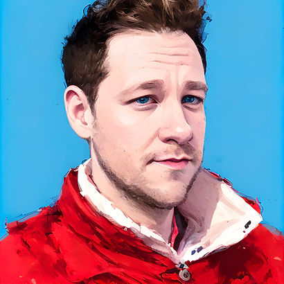

PRODUCT ENGINEER

PRODUCT ENGINEER
I'm a product engineer
exploring AI-driven UX
Currently, I'm building chatile.ai — a conversational navigation framework that lets users skip straight to the screen they need by saying what they want. I'm researching how on-device AI changes the way people interact with every app they use.
Before Chatile, I was an engineer at Uber where I co-architected and led a complete rebuild of Uber One across both Eats and Uber apps.
Before Uber, I built the group chat feature at Tumblr on mobile as well as rebuilt many of their mobile ads products.
And before that, I was at Treemo Labs, where I led the mobile team that built all of the CBS News apps, along with apps for CBS entertainment shows like Survivor and Big Brother.
I've also created some original apps and enjoyed building innovative things with high paced startup teams.
I'm based in NYC, but you'll often find me in London or ATX.